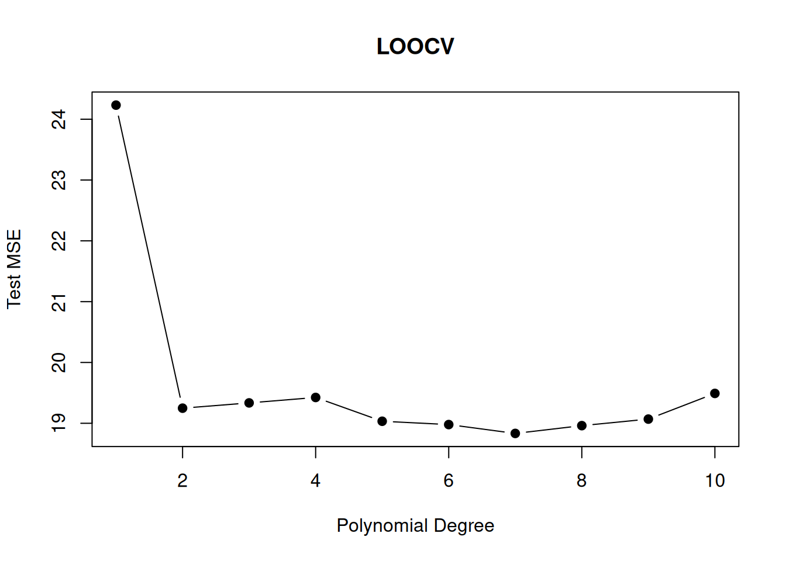

The bootstrap is a widely applicable and powerful statistical tool to quantify the uncertainty associated with a given estimator or statistical learning method.
Illustration
Suppose that we wish to invest a fixed sum of money in two financial assets that yield returns of \(X\) and \(Y.\) These returns \(X\) and \(Y\) are random with
\(Var(X)=\sigma^2_X\)
\(Var(Y)=\sigma^2_Y\)
\(Cov(X,Y)=\sigma_{XY}\)
We want to invest a fraction \(\alpha\in(0,1)\) in \(X\) and invest the remaining \(1-\alpha\) in \(Y.\)
Our aim is to minimize the variance (risk) of our investment, i.e., we want to minimize \[
Var\left(\alpha X + (1-\alpha)Y\right).
\] One can show that the value \(\alpha\) that minimizes this variance is \[
\alpha = \frac{\sigma^2_Y - \sigma_{XY}}{\sigma^2_X + \sigma^2_Y - 2\sigma_{XY}}.
\qquad(6.1)\] Using a data set that contains past measurements \[
((X_1,Y_1),\dots,(X_n,Y_n))
\] for \(X\) and \(Y,\) we can estimate the unknown \(\alpha\) by plugging in estimates of the variances and covariances \[
\hat\alpha = \frac{\hat\sigma^2_Y - \hat\sigma_{XY}}{\hat\sigma^2_X + \hat\sigma^2_Y - 2\hat\sigma_{XY}}
\qquad(6.2)\] with \[
\begin{align*}
\hat{\sigma}^2_X&=\frac{1}{n}\sum_{i=1}^n\left(X_i-\bar{X}\right)^2\\
\hat{\sigma}^2_Y&=\frac{1}{n}\sum_{i=1}^n\left(Y_i-\bar{Y}\right)^2\\
\hat{\sigma}_{XY}&=\frac{1}{n}\sum_{i=1}^n\left(X_i-\bar{X}\right)\left(Y_i-\bar{Y}\right),
\end{align*}
\] where \(\bar{X}=\frac{1}{n}\sum_{i=1}^nX_i,\) and likewise for \(\bar{Y}.\)
It is natural to wish to quantify the accuracy of our estimate \(\hat\alpha\approx \alpha.\) I.e., we wish to know the standard error of the estimator \(\hat\alpha\), \[
\sqrt{Var(\hat\alpha)} = \operatorname{SE}(\hat\alpha)=?
\] Computing \(\operatorname{SE}(\hat\alpha)\) is here difficult due to the definition of \(\hat\alpha\) in Equation 6.2 which contains variance estimates also in the denominator.
The Infeasible Bootstrap: A Monte Carlo Simulation
Let us, for a moment, assume that we know the distributions of \(X\) and \(Y.\) And, for simplicity, let’s say \[
\left(\begin{matrix}X\\ Y\end{matrix}\right) \sim F_{(X,Y)},
\] where \(F_{(X,Y)}\) is the distribution function of the bi-variate normal distribution \[
\mathcal{N}\left(\left(\begin{matrix}0\\0\end{matrix}\right),\left[\begin{matrix}\sigma_X^2&\sigma_{XY}\\\sigma_{XY}&\sigma_{Y}^2\end{matrix}\right]\right).
\qquad(6.3)\]
If this were true, i.e., if we would know the true population distribution of \(X\) and \(Y,\) we could simply generate a new dataset containing new observations for \(X\) and \(Y\) that allows us to compute a new estimate \(\hat\alpha.\)
Repeatedly generating new datasets \(((X_1,Y_1),\dots,(X_n,Y_n))\) by sampling new observations from the (here assumed) true population distribution Equation 6.3, for instance, \(B=1000\) many times, would allow us to compute \(B=1000\) estimates \[
\hat\alpha_1,\;\hat\alpha_2,\dots,\hat\alpha_{B}.
\] The empirical standard deviation \[
\sqrt{\frac{1}{B}\sum_{b=1}^B\left(\hat\alpha_b - \bar{\alpha}\right)^2},\quad\text{with}\quad \bar{\alpha} = \frac{1}{B}\sum_{b=1}^B\hat\alpha_b,
\] is then a very good estimate of the (unknown) true \(\operatorname{SE}(\hat\alpha).\)
Indeed, by the law of large numbers this sample standard deviation consistently estimates the true \(\operatorname{SE}(\hat\alpha)\) as \(B\to\infty,\) provided that we sample from the true population distribution \(F_{(X,Y)}.\)
R code for doing this Monte Carlo simulation:
suppressPackageStartupMessages(library("MASS"))# for mvrnorm()n<-100# sample size## Next: Defining the (usually unknown) population ## distribution of (X,Y) ~ F_XY, where F_XY is ## assumed to be a Bi-variate normal distribution ## with the following parameters: mu_X<-0mu_Y<-0sigma2_X<-3sigma2_Y<-4sigma_XY<-1Sigma<-rbind(c(sigma2_X, sigma_XY), c(sigma_XY, sigma2_Y))## The true (usually unknown) alpha value: alpha_true<-(sigma2_Y-sigma_XY)/(sigma2_X+sigma2_X-2*sigma_XY)## Infeasible Bootstrap (i.e. a Monte Carlo (MC) Simulation)set.seed(333)B<-1000alpha_hat_MC<-numeric(B)for(bin1:B){dat<-mvrnorm(n =n, mu =c(mu_X, mu_Y), Sigma =Sigma)X<-dat[,1]Y<-dat[,2]##sigma2_X_hat<-var(X)sigma2_Y_hat<-var(Y)sigma_XY_hat<-cov(X,Y)##alpha_hat_MC[b]<-(sigma2_Y_hat-sigma_XY_hat)/(sigma2_X_hat+sigma2_X_hat-2*sigma_XY_hat)}## Estimate of the standard error of the estimates for alpha:sd(alpha_hat_MC)
[1] 0.2301389
Thus, this Monte Carlo simulation estimates that the true standard error equals 0.2301389, i.e.
and by the law of large number (large B), we can expect this estimation to be really good and reliable.
But, unfortunately, this result depends on our completely unrealistic assumption that we know the true population distribution \(F_{(X,Y)}\) of \((X,Y),\) which makes this simple resampling approach infeasible in practice. 😭
The Actual (Feasible) Bootstrap
Fortunately, we can use the empirical cumulative distribution function\(F_{n,(X,Y)}\) from the originally observed dataset of past measurements for \(X\) and \(Y,\) as an approximation to the true (unknown) population distribution \(F_{(X,Y)}\), \[
F_{n,(X,Y)}\approx F_{(X,Y)}.
\]
So, instead of resampling from an unknown population distribution \(F_{(X,Y)},\) which is not possible in practice, since \(F_{(X,Y)}\) is typically unknown, we resample from the empirical distribution \(F_{n,(X,Y)},\) which is easily possible in practice. 🥳
This idea will work well, as long as \(F_{n,(X,Y)}\) serves as a good approximation of \(F_{(X,Y)}\) which will always be the case if the sample size \(n\) is sufficiently large since, by the famous Glivenko-Cantelli Theorem, \(F_{n,(X,Y)}\) is uniformly consistent for \(F_{(X,Y)}.\)
Sampling from an empirical cdf \(F_{n}\) simply means sampling from the observed dataset \((X_i,Y_i)\), \(i=1,\dots,n\), with replacement, for instance like this:
bootstrap_sample<-sample(x =1:n, n, replace =TRUE)bootstrap_data<-data_frame[bootstrap_sample, ]
In order to illustrate the bootstrap, let us generate some artificial data. We use again the bi-variate normal distribution as in the “infeasible bootstrap” illustration.
## Generate some artificial data observed_data<-mvrnorm(n =n, mu =c(mu_X, mu_Y), Sigma =Sigma)
If the bootstrap works, then the bootstrap estimate of the standard error \(\operatorname{SE}(\hat\alpha)\) should be close to the infeasible Monte Carlo estimate, even though the bootstrap method does not explicitly use the true data generating process, but only the observed data.
The following code implements the bootstrap:
set.seed(123)## Bootstrap B<-1000alpha_hat_boot<-numeric(B)for(bin1:B){bootstrap_sample<-sample(x =1:n, n, replace =TRUE)bootstrap_data<-observed_data[bootstrap_sample, ]##X<-bootstrap_data[,1]Y<-bootstrap_data[,2]##sigma2_X_hat<-var(X)sigma2_Y_hat<-var(Y)sigma_XY_hat<-cov(X,Y)##alpha_hat_boot[b]<-(sigma2_Y_hat-sigma_XY_hat)/(sigma2_X_hat+sigma2_X_hat-2*sigma_XY_hat)}## Estimate of the standard error of the estimates for alpha:sd(alpha_hat_boot)
[1] 0.2523776
The bootstrap estimate of the true standard error equals 0.2523776, i.e.
This is really close to the infeasible Monte Carlo simulation based estimate sd(alpha_hat_MC)\(=\) 0.2301389, but without making use of the unknown data generating process.
The bootstrap method is attributed to Bradley Efron, who received the International Prize in Statistics (the Nobel price of statistics) for his seminal works on the bootstrap method.
6.1 Self-Study: Exercises
Prepare the following exercises of Chapter 5 in our course textbook:
Exercise 3
Exercise 5
Exercise 8
6.1.1 Solutions
Exercise 3
We now review k-fold cross-validation.
3 a) Explain how k-fold cross-validation is implemented.
Answer:
k-fold cross-validation is implemented by taking the set of \(n\) observations and randomly splitting into \(K\) non-overlapping groups of roughly equal group-size (approx. \(n/K\)). To compute the \(k\)-th \((k=1,2,\dots,K)\) test MSE estimate, group \(k\) is used as a validation set and the remainder as a training set. The test error is estimated by averaging the \(K\) resulting test MSE estimates.
3 b) What are the advantages and disadvantages of \(k\)-fold cross-validation relative to:
the validation set approach?
LOOCV?
Answer:
The validation set approach is conceptually simple and easily implemented as you are simply partitioning the existing training data into two sets. However, there are two drawbacks:
The estimate of the test MSE can be highly variable/instable; i.e. may strongly depend on which observations are included in the training and validation sets.
The validation set error rate may tend to overestimate the test MSE for the actual model fit on the entire data set since the training set has a relatively small sample size in comparison to the actual data size \(n\).
LOOCV is a special case of k-fold cross-validation with \(k = n\). Thus, LOOCV is the computationally most expensive cross-validation method since the model must be fit \(n\) times. Also, LOOCV has higher variance, but lower bias, than k-fold CV: On the one hand, the LOOCV cross-validation samples are highly correlated; one the other hand, the cross-validation samples are having sample sizes roughly equal to the actual sample size \((n-1\approx n).\)
Exercise 5
Previously, we used logistic regression to predict the probability of default using income and balance on the Default dataset. We will now estimate the test error of this logistic regression model using the validation set approach. Do not forget to set a random seed before beginning your analysis.
5 a) Fit a logistic regression model that uses income and balance to predict default.
The following object is masked from 'package:MASS':
Boston
# Attaching the data setattach(Default)# Estimate a GLM model where "family=binomial" selects a logistic regressionglm.fit<-glm(default~income+balance, data =Default, family =binomial)# Use summary function to print the resultssummary(glm.fit)
Call:
glm(formula = default ~ income + balance, family = binomial,
data = Default)
Coefficients:
Estimate Std. Error z value Pr(>|z|)
(Intercept) -1.154e+01 4.348e-01 -26.545 < 2e-16 ***
income 2.081e-05 4.985e-06 4.174 2.99e-05 ***
balance 5.647e-03 2.274e-04 24.836 < 2e-16 ***
---
Signif. codes: 0 '***' 0.001 '**' 0.01 '*' 0.05 '.' 0.1 ' ' 1
(Dispersion parameter for binomial family taken to be 1)
Null deviance: 2920.6 on 9999 degrees of freedom
Residual deviance: 1579.0 on 9997 degrees of freedom
AIC: 1585
Number of Fisher Scoring iterations: 8
5 b) Using the validation set approach, estimate the test error of this model. In order to do this, you must perform the following steps:
Split the sample set into a training set and a validation set.
Fit a multiple logistic regression model using only the training observations.
Obtain a prediction of default status for each individual in the validation set by computing the posterior probability of default for that individual, and classifying the individual to the default category if the posterior probability is greater than \(0.5\).
Compute the validation set error, which is the fraction of the observations in the validation set that are misclassified.
Answer:
## We are going to do similar tasks several times in this exercise. ## Therefore, it's convenient to build a function:fun5b<-function(){# sample(): takes a sample of the specified size from the elements of x using either with or without replacement.n<-dim(Default)[1]train<-sample(x =n, size =round(n/2, 0), replace =FALSE)# logistic function fit (training dataset)glm.fit<-glm(default~income+balance, data =Default, family =binomial, subset =train)# predictions (test dataset)glm.pred<-rep("No", times =round(n/2, 0))glm.probs<-predict(glm.fit, Default[-train, ], type ="response")glm.pred[glm.probs>0.5]<-"Yes"# return the test (prediction) error rate return(mean(glm.pred!=Default[-train, ]$default))}## set seedset.seed(1110)## compute test prediction error using the ## programmed validation set approachfun5b()
[1] 0.0262
Answer: There is a 2.62% test error rate from the validation set approach.
5 c) Repeat the process in (b) three times, using three different splits of the observations into a training set and a validation set. Comment on the results obtained.
fun5b()
[1] 0.028
fun5b()
[1] 0.0272
fun5b()
[1] 0.025
Answer: The estimates of the test error rates are in the range of 2.5% and 2.8% and are varying with respect to the different training and validation set splittings.
5 d) Now consider a logistic regression model that predicts the probability of default using income, balance, and a dummy variable for student. Estimate the test error for this model using the validation set approach. Comment on whether or not including a dummy variable for student leads to a reduction in the test error rate.
Answer:
set.seed(1)# generate our training datan<-dim(Default)[1]train<-sample(n, round(n/2, 0))# run regression on the training data subsetglm.fit<-glm(default~income+balance+student, data =Default, family =binomial, subset =train)# test sample predictionsglm.pred<-rep("No", times =round(n/2, 0))# fill with our predictionsglm.probs<-predict(glm.fit, Default[-train, ], type ="response")glm.pred[glm.probs>0.5]<-"Yes"# test (prediction) error rate mean(glm.pred!=Default[-train, ]$default)
[1] 0.026
Answer:
The test error rate is 2.6%. Thus adding the student dummy variable to our specification doesn’t appear to reduce the test error rate.
Exercise 8
We will now perform cross-validation on a simulated data set.
8 a) Generate a simulated data set as follows.
# set seed for rnorm functionset.seed(1)# rnorm draws pseudo-random variables from a # (standard) normal distributionx<-rnorm(100)y<-x-2*x^2+rnorm(100)
In this data set, what is \(n\) and what is \(p\)? Write out the model used to generate the data in equation form.
We can observe a quadratic relationship between \(Y\) and \(X.\) Moreover, \(X\) ranges from about \(-2\) to \(2,\) while \(Y\) ranges from about \(-12\) to \(2.\) The largest \(Y\) values are observed for \(X\) values around \(0.\)
8 c) Set a random seed, and then compute the LOOCV errors that result from fitting the following four models using least squares:
\(Y = \beta_0 +\beta_1 X + \epsilon\)
\(Y = \beta_0 +\beta_1 X + \beta_2 X^2 + \epsilon\)
# call boot package (contains the cv.glm() function)library(boot)#set seedset.seed(1)# create data frame containing the simulated data for X and YSim_Data<-data.frame(x, y)
8 c i)
# i# Caution:# This performes linear regression (no 'family' argument specified)lm.fit_i<-glm(y~x, data =Sim_Data)# cv.glm calculates the estimated K-fold cross-validation prediction# error for generalized linear models (with K=n).# '$delta' selects a vector of length two: # The first component is the raw cross-validation estimate of the # prediction error. # The second component is the adjusted cross-validation estimate. # (The adjustment is designed to compensate for bias.)cv.glm(data =Sim_Data, glmfit =lm.fit_i, K =nrow(Sim_Data))$delta
[1] 7.288162 7.284744
8 c ii)
# ii # see ?poly for infos on poly()lm.fit_ii<-glm(y~poly(x, 2, raw=TRUE), data =Sim_Data)cv.glm(Sim_Data, lm.fit_ii, K =nrow(Sim_Data))$delta
[1] 0.9374236 0.9371789
8 c iii)
# iiilm.fit_iii<-glm(y~poly(x, 3, raw=TRUE), data =Sim_Data)cv.glm(Sim_Data, lm.fit_iii, K =nrow(Sim_Data))$delta
[1] 0.9566218 0.9562538
8 c iv)
# ivlm.fit_iv<-glm(y~poly(x, 4, raw=TRUE), data =Sim_Data)cv.glm(Sim_Data, lm.fit_iv, K =nrow(Sim_Data))$delta
[1] 0.9539049 0.9534453
8. d) Repeat (c) using another random seed, and report your results. Are your results the same as what you got in (c)? Why?
set.seed(10)# i.lm.fit1<-glm(y~x, data =Sim_Data)cv.glm(Sim_Data, lm.fit1)$delta
[1] 7.288162 7.284744
# ii.lm.fit2<-glm(y~poly(x, 2, raw=TRUE), data =Sim_Data)cv.glm(Sim_Data, lm.fit2)$delta
[1] 0.9374236 0.9371789
# iii.lm.fit3<-glm(y~poly(x, 3, raw=TRUE), data =Sim_Data)cv.glm(Sim_Data, lm.fit3)$delta
[1] 0.9566218 0.9562538
# iv.lm.fit4<-glm(y~poly(x, 4, raw=TRUE), data =Sim_Data)cv.glm(Sim_Data, lm.fit4)$delta
[1] 0.9539049 0.9534453
Answer:
The results are exactly the same, because LOOCV will be the same since it evaluates n folds of a single observation.
8 e) Which of the models in (c) had the smallest LOOCV error? Is this what you expected? Explain your answer.
Answer:
The quadratic polynomial had the lowest LOOCV test error rate. This was expected as it matches the true form of \(Y\).
8 f) Comment on the statistical significance of the coefficient estimates that results from fitting each of the models in (c) using least squares. Do these results agree with the conclusions drawn based on the cross-validation results?
Call:
glm(formula = y ~ x, data = Sim_Data)
Coefficients:
Estimate Std. Error t value Pr(>|t|)
(Intercept) -1.6254 0.2619 -6.205 1.31e-08 ***
x 0.6925 0.2909 2.380 0.0192 *
---
Signif. codes: 0 '***' 0.001 '**' 0.01 '*' 0.05 '.' 0.1 ' ' 1
(Dispersion parameter for gaussian family taken to be 6.760719)
Null deviance: 700.85 on 99 degrees of freedom
Residual deviance: 662.55 on 98 degrees of freedom
AIC: 478.88
Number of Fisher Scoring iterations: 2
Call:
glm(formula = y ~ poly(x, 4, raw = TRUE), data = Sim_Data)
Coefficients:
Estimate Std. Error t value Pr(>|t|)
(Intercept) 0.156703 0.139462 1.124 0.264
poly(x, 4, raw = TRUE)1 1.030826 0.191337 5.387 5.17e-07 ***
poly(x, 4, raw = TRUE)2 -2.409898 0.234855 -10.261 < 2e-16 ***
poly(x, 4, raw = TRUE)3 -0.009133 0.067229 -0.136 0.892
poly(x, 4, raw = TRUE)4 0.069785 0.053240 1.311 0.193
---
Signif. codes: 0 '***' 0.001 '**' 0.01 '*' 0.05 '.' 0.1 ' ' 1
(Dispersion parameter for gaussian family taken to be 0.9197797)
Null deviance: 700.852 on 99 degrees of freedom
Residual deviance: 87.379 on 95 degrees of freedom
AIC: 282.3
Number of Fisher Scoring iterations: 2
Answer:
The \(p\)-values only show statistical significance of the linear and the quadratic predictor, which agrees with the CV-results.
6.2 Self-Study: R-Lab Resampling Methods
In this lab, we explore the resampling techniques covered in this chapter. Some of the commands in this lab may take a while to run on your computer.
6.2.1 The Validation Set Approach
We explore the use of the validation set approach in order to estimate the test error rates that result from fitting various linear models on the Auto data set.
Before we begin, we use the set.seed() function in order to set a for R’s random number generator, so that the (pseudo) random data splits are reproducible.
We begin by using the sample() function to split the set of observations into two halves, by selecting a random subset of \(196\) observations out of the original \(392\) observations. We refer to these observations as the training set.
We then use the subset option in lm() to fit a linear regression using only the observations corresponding to the training set.
lm.fit<-lm(mpg~horsepower, data =Auto, subset =train)
We now use the predict() function to estimate the response for all \(392\) observations, and we use the mean() function to calculate the MSE of the \(196\) observations in the test dataset. Note that the -train index below selects only the observations that are not in the training set.
Therefore, the estimated test MSE for the linear regression fit is \(23.27\). We can use the poly() function to estimate the test error for the quadratic and cubic regressions.
lm.fit2<-lm(mpg~poly(horsepower, 2), data =Auto, subset =train)## Test MSE mean((mpg-predict(lm.fit2, Auto))[-train]^2)
[1] 18.71646
lm.fit3<-lm(mpg~poly(horsepower, 3), data =Auto, subset =train)## Test MSE mean((mpg-predict(lm.fit3, Auto))[-train]^2)
[1] 18.79401
These error rates are \(18.72\) and \(18.79\), respectively. If we choose a different training set instead, then we will obtain somewhat different errors on the testing set.
## Polynomial degree 2lm.fit2<-lm(mpg~poly(horsepower, 2), data =Auto, subset =train)mean((mpg-predict(lm.fit2, Auto))[-train]^2)
[1] 20.43036
## Polynomial degree 3lm.fit3<-lm(mpg~poly(horsepower, 3), data =Auto, subset =train)mean((mpg-predict(lm.fit3, Auto))[-train]^2)
[1] 20.38533
Using this split of the observations into a training set and a testing set, we find that the validation set error rates for the models with linear, quadratic, and cubic terms are \(25.73\), \(20.43\), and \(20.39\), respectively.
These results are consistent with our previous findings: a model that predicts mpg using a quadratic function of horsepower performs better than a model that involves only a linear function of horsepower, and there is little evidence that a model that uses a cubic function of horsepower performance substantially better.
6.2.2 Leave-One-Out Cross-Validation
The LOOCV estimate can be automatically computed for any generalized linear model using the glm() and cv.glm() functions. In the lab for Chapter 4, we used the glm() function to perform logistic regression by passing in the family = "binomial" argument. But if we use glm() to fit a model without passing in the family argument, then it performs linear regression, just like the lm() function. So for instance,
glm_fit<-glm(mpg~horsepower, data =Auto)coef(glm_fit)
(Intercept) horsepower
39.9358610 -0.1578447
and
lm.fit<-lm(mpg~horsepower, data =Auto)coef(lm.fit)
(Intercept) horsepower
39.9358610 -0.1578447
yield identical linear regression models. In this lab, we will perform linear regression using the glm() function rather than the lm() function because the former can be used together with cv.glm(). The cv.glm() function is part of the boot library.
## install.packages("boot")library("boot")glm_fit<-glm(mpg~horsepower, data =Auto)cv.err<-cv.glm(Auto, glm_fit)cv.err$delta
[1] 24.23151 24.23114
The cv.glm() function produces a list with several components. The two numbers in the delta vector contain the cross-validation results. In this case the numbers are identical (up to two decimal places) and correspond to the LOOCV statistic given in Equation 4.3. Below, we discuss a situation in which the two numbers differ. Our cross-validation estimate for the test error is approximately \(24.23\).
We can repeat this procedure for increasingly complex polynomial fits. To automate the process, we use the for() function to initiate a which iteratively fits polynomial regressions for polynomials of order \(i=1\) to \(i=10\), computes the associated cross-validation error, and stores it in the \(i\)th element of the vector cv_error. We begin by initializing the vector.
cv_error<-rep(0, 10)for(iin1:10){glm_fit<-glm(mpg~poly(horsepower, i), data =Auto)cv_error[i]<-cv.glm(Auto, glm_fit)$delta[1]}plot(cv_error, type="b", ylab="Test MSE", xlab="Polynomial Degree", col ="black", bg ="black", pch =21, main="LOOCV")

We see a sharp drop in the estimated test MSE between the linear and quadratic fits, but then no clear improvement from using higher-order polynomials.
6.2.3\(k\)-Fold Cross-Validation
The cv.glm() function can also be used to implement \(k\)-fold CV. Below we use \(k=10\), a common choice for \(k\), on the Auto data set. We once again set a random seed and initialize a vector in which we will store the CV errors corresponding to the polynomial fits of orders one to ten.
set.seed(17)cv_error_10<-rep(0, 10)for(iin1:10){glm_fit<-glm(mpg~poly(horsepower, i), data =Auto)cv_error_10[i]<-cv.glm(Auto, glm_fit, K =10)$delta[1]}##plot(cv_error_10, type="b", ylab="Test MSE", xlab="Polynomial Degree", col ="black", bg ="black", pch =21, main="10-fold CV")
We still see little evidence that using cubic or higher-order polynomial terms leads to lower test error than simply using a quadratic fit.
Notice that the computation time is shorter than that of LOOCV.
(In principle, the computation time for LOOCV for a least squares linear model should be faster than for \(k\)-fold CV, due to the availability of the formula Equation 4.4 for LOOCV; however, unfortunately the cv.glm() function does not make use of this formula.)
We saw in Section 6.2.2 that the two numbers associated with delta are essentially the same when LOOCV is performed. When we instead perform \(k\)-fold CV, then the two numbers associated with delta differ slightly. The first number is the standard \(k\)-fold CV estimate, as in Equation 4.5. The second is a bias-corrected version. On this data set, however, the two estimates are very similar to each other.
6.2.4 The Bootstrap
We illustrate the use of the bootstrap revisiting the portfolio choice example from above, as well as on an example involving estimating the accuracy of the linear regression model on the Auto data set.
6.2.4.1 Estimating the Accuracy of a Statistic of Interest
One of the great advantages of the bootstrap approach is that it can be applied in almost all situations. No complicated mathematical calculations are required. Performing a bootstrap analysis in R entails only two steps:
First, we must create a function that computes the statistic of interest.
Second, we use the boot() function, which is part of the boot library, to perform the bootstrap by repeatedly sampling observations from the data set with replacement.
The Portfolio data set in the ISLR2 package is simulated data of \(100\) pairs of returns, generated in the fashion described above, where we introduced the portfolio example.
To illustrate the use of the bootstrap on this data, we must first create a function, alpha_fn(), which takes as input the \((X,Y)\) data as well as a vector indicating which observations should be used to estimate \(\alpha\). The function then outputs the estimate for \(\alpha\) based on the selected observations.
This function returns an estimate for \(\alpha\) based on applying Equation 6.1 to the observations indexed by the argument index. For instance, the following command tells R to estimate \(\alpha\) using all of the \(100\) observations.
alpha_fn(data =Portfolio, index =1:100)# complete original dataset
[1] 0.5758321
The next command uses the sample() function to randomly select \(100\) observations from the range \(1\) to \(100\), with replacement. This is equivalent to constructing a new bootstrap data set and recomputing \(\hat{\alpha}\) based on the new data set.
set.seed(7)alpha_fn(data =Portfolio, index =sample(x=1:100, size=100, replace =TRUE))
[1] 0.5385326
We can implement a bootstrap analysis by performing this command many times, recording all of the corresponding estimates for \(\alpha\), and computing the resulting standard deviation. (We use this approach above.)
However, the boot() function automates this approach. Below we produce \(R=1,000\) bootstrap estimates for \(\alpha\).
boot(data =Portfolio, statistic =alpha_fn, R =1000)
The final output shows that using the original data, \(\hat{\alpha}=0.5758\), and that the bootstrap estimate for \(\operatorname{SE}(\hat{\alpha})\) is \(0.0897\).
6.2.4.2 Estimating the Accuracy of a Linear Regression Model
The bootstrap approach can be used to assess the variability of the coefficient estimates and predictions from a statistical learning method. Here we use the bootstrap approach in order to assess the variability of the estimates for \(\beta_0\) and \(\beta_1\), the intercept and slope terms for the linear regression model that uses horsepower to predict mpg in the Auto data set. We will compare the estimates obtained using the bootstrap to those obtained using the formulas for \({\rm SE}(\hat{\beta}_0)\) and \({\rm SE}(\hat{\beta}_1)\) described in Chapter 3.1.2.
We first create a simple function, boot_fn(), which takes in the Auto data set as well as a set of indices for the observations, and returns the intercept and slope estimates for the linear regression model. We then apply this function to the full set of \(392\) observations in order to compute the estimates of \(\beta_0\) and \(\beta_1\) on the entire data set using the usual linear regression coefficient estimate formulas from Chapter 3.
## Function to compute coefficient estimates using lm()boot_fn<-function(data, index){coef(lm(mpg~horsepower, data =data, subset =index))}## Sample sizen<-nrow(Auto)## Coeficient estimates using the total sampleboot_fn(data =Auto, index =1:n)
(Intercept) horsepower
39.9358610 -0.1578447
The boot_fn() function can also be used in order to create bootstrap estimates for the intercept and slope terms by randomly sampling from among the observations with replacement. Here we give two examples.
set.seed(1)boot_fn(data =Auto, index =sample(1:n, n, replace =TRUE))
(Intercept) horsepower
40.3404517 -0.1634868
boot_fn(data =Auto, index =sample(1:n, n, replace =TRUE))
(Intercept) horsepower
40.1186906 -0.1577063
Next, we use the boot() function to compute the standard errors of \(R=1,000\) bootstrap estimates for the intercept and slope terms.
boot_obj<-boot(data =Auto, statistic =boot_fn, R =1000)boot_obj
This indicates that the bootstrap estimate for \({\rm SE}(\hat{\beta}_0)\) is \(0.84\), and that the bootstrap estimate for \({\rm SE}(\hat{\beta}_1)\) is \(0.0073\).
The reported bias equals the difference between the sample means of the bootstrap realizations and the full sample estimates:
As discussed in Chapter 3.1.2, standard formulas can be used to compute the standard errors for the regression coefficients in a linear model. These can be obtained using the summary() function.
Estimate Std. Error t value Pr(>|t|)
(Intercept) 39.9358610 0.717498656 55.65984 1.220362e-187
horsepower -0.1578447 0.006445501 -24.48914 7.031989e-81
The standard error estimates for \(\hat{\beta}_0\) and \(\hat{\beta}_1\) obtained using the formulas from Chapter 3.1.2 are \(0.717\) for the intercept and \(0.0064\) for the slope.
Interestingly, these are somewhat different from the estimates obtained using the bootstrap. Does this indicate a problem with the bootstrap? In fact, it suggests the opposite. Recall that the standard formulas given in Equation 3.8 (Chapter 3.1.2) rely on certain assumptions. For example, they depend on the unknown parameter \(\sigma^2\), the noise variance. We then estimate \(\sigma^2\) by \(\operatorname{RSS}/(n-p-1).\) Now although the formulas for the standard errors do not rely on the linear model being correct, the estimate for \(\sigma^2\) does. We see in Figure 3.8 of our textbook that there is a non-linear relationship in the data, and so the residuals from a linear fit will be inflated, and so will \(\hat{\sigma}^2\).
Moreover, the standard formulas assume (somewhat unrealistically) that the \(x_i\) are fixed, and all the variability comes from the variation in the errors \(\epsilon_i\). The bootstrap approach does not rely on any of these assumptions, and so it is likely giving a more accurate estimate of the standard errors of \(\hat{\beta}_0\) and \(\hat{\beta}_1\) than is the summary() function.
Below we compute the bootstrap standard error estimates and the standard linear regression estimates that result from fitting the quadratic model to the data.
boot_fn<-function(data, index)coef(lm(mpg~horsepower+I(horsepower^2), data =data, subset =index))set.seed(1)boot(data =Auto, statistic =boot_fn, R =1000)
Since the quadratic model provides a good fit to the data (Figure 3.8 of our textbook), there is now a better correspondence between the bootstrap estimates and the standard estimates of \({\rm SE}(\hat{\beta}_0)\), \({\rm SE}(\hat{\beta}_1)\) and \({\rm SE}(\hat{\beta}_2)\).